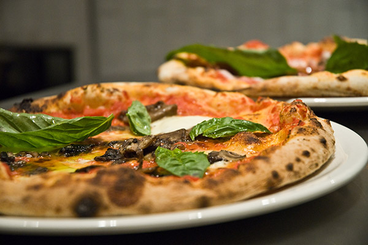

Визначні пам'ятки

Окрім Колізею, ми були в захваті від Пантеону та фонтану Треві, куди обов'язково кинули монетку.
Кухня та гастрономія 🍕

Справжня італійська піца на тонкому тісті та паста карбонара — це щось неймовірне. А на десерт — справжнє джелато!
Культура та традиції
Італійці дуже емоційні та привітні. Ми насолоджувалися їхньою традицією вечірніх прогулянок і спілкування на площах.
Особисті історії
Найяскравіший спогад — як ми заблукали вузькими вуличками Трастевере і випадково знайшли найкращу сімейну траторію у місті.